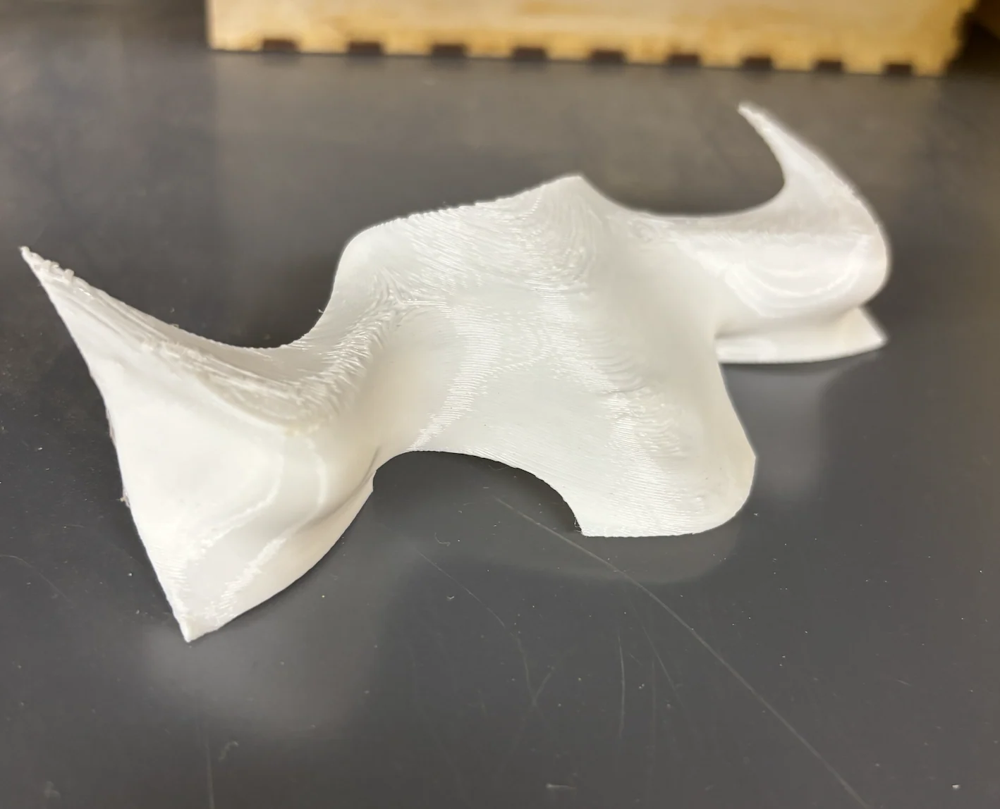
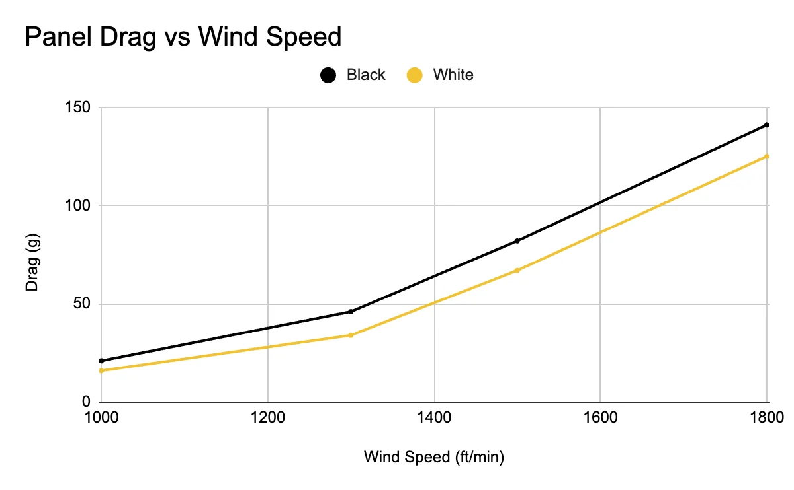

G.E.A.R.: Go-Kart Efficiency through Aerodynamic Research
wind tunnel testing front panels to cut drag on an open wheel kart
- project
- 05 of 05
- event
- tjSTAR
- credit
- Senior research project with two classmates, presented at tjSTAR.
01the problem
- open wheel karts churn the air around exposed tires and lose speed to it
- the front panel is the first surface the airflow meets
- we asked whether shaping it could cut drag without losing the downforce that holds grip

02what governs the problem
- drag rises with the square of velocity, so losses grow fast at speed
- downforce follows the same square law, which is why the two trade against each other
- Reynolds number sets how turbulent the flow around the kart becomes
- goal was a panel that performs inside a high Reynolds number regime
03how we tested
- several panel shapes designed in CAD, curved, flat and sloped
- cowl and cowl less variants to isolate how much drag the driver adds
- each 3D printed and run in a wind tunnel against the bare chassis
- drag and front and rear downforce measured across a swept speed range


04results
- the open panel beat the covered panel at every wind speed tested
- the driver cover added more drag than the downforce it recovered was worth
- the gap widened with speed, matching the square law
- CFD agreed with the tunnel, and wide frontal area is the limit to fix next
